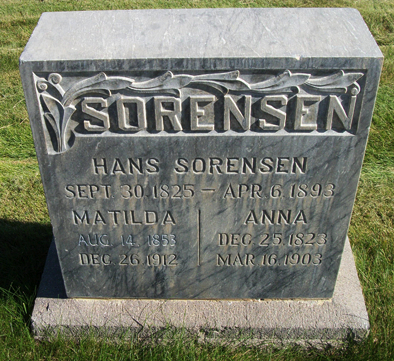
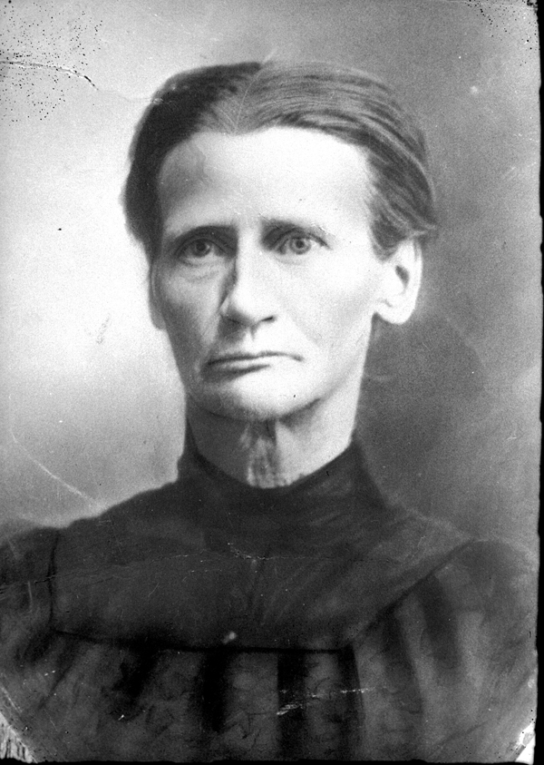

Chapter 9
Appendix 1
Back to Table of Contents.
Afterword
Hans was buried in Aurora, Utah. Levi recalls the funeral experience: "My brother Parley came and got mother and we kids in a wagon with a high bed on it. Parley and mother rode in a spring seat and we kids played in the back. It was fun for us to ride in the wagon because we didn't do that very often." 1 At the time of his death, Hans had 10 living children, 4 from his marriage to Ane: Soren Peter in Denmark; Andrew William in Glenwood; Caroline Sophia in Colonia Dublan, Mexico; and Parley Peter in Aurora. The six children of Hans and Matilda were all still quite young, 5 of them living with their mother in Aurora at the time: Josephine, 10; Maria (Ry),8; Edwin, 6; Levi, 4; and Alma, 2. Nora, 11, lived with Ane.

Ane Nielsen Sorensen lived almost 10 years more. Nora, Hans and Matilda's oldest child, cared for Ane in her old age, especially after she broke her hip. 2 Ane died in Aurora on March 16, 1903. The newspaper account reads:
"Aurora Mrs. Sorenson Dead
"Mrs. Annie Sorenson was buried here this afternoon. Nearly four years ago Sister Sorenson fell and injured her hip and has been bedfast ever since.
"She joined the Church in Denmark and remained true to the last. She leaves a large circle of friends and relatives. She was 80 years old." 3
Matilda carried on and raised her large family of six children. Certainly, this was a difficult time for her.

Matilda Sorensen
Matilda died in 1912 of pneumonia as a complication of the flu. She died on the day after Christmas that year. She was 59 years old. The death certificate was made out and signed by her daughter and son-in-law, Maria (Ry) and Phillip Mason.
The family discovered this poem, written in Norwegian, translated into English, and use it as a tribute to her.
|
Oh, I dreamed one night, dear Mother, one dream that fascinated my mind why, then soft cloud where I rested in bed the song of small birds in evening song. Over all the mossy grown stones small lilies in rows come to fine, and round about where I lay songs sounded from each thing, to call all small flowers blooms home. And in tones escaping form the sea, wreaths of sunbeams leans in toward dreams over land and sea I was dreaming while I softly went to sleep. |
There I saw one wonderful angel, she spoke then, declaring to me and with a smile on her mouth she stood with me in time, and I saw dear Mother, it was you. From Norway -- 16 November 1955. Writer unknown. |
1. Levi Sorensen history.